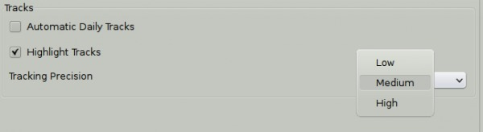
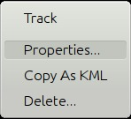
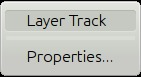
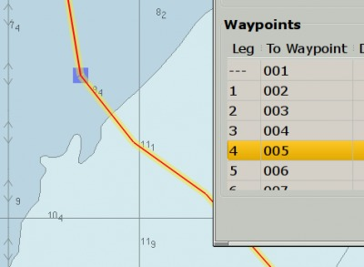

Ship Track
 Track off
Track off
 Track on
Track on
Toggling the track icon turns tracking on and off. When tracking is on, the button hasa green background. Tracking means that a record is kept of the vessels position as it proceeds. A trail is left behind the vessel on the chart display.
Tracking is persistent. If you shut down OpenCPN with tracking active, tracking will be activated automatically next time you start. Note however that tracking on start up is delayed until a GPS position is available. This action avoids large nonsense jumps in the beginning of the new track. The way the track is recorded can be set in Options → Ships → Ownship. A full explanation is available in Own Ship

Recorded tracks can be imported, exported and managed using the Route & Mark Manager. When right clicking on a track you can select Track Properties from the context menu, and a new dialog pops up. Normally it looks like this:

But if the track is a layer or part of a layer, you will see this instead:

A layer cannot be changed easily, and a lot of what follows does not apply to Layer Tracks. Read more about Layers.
The properties dialog can also be reached through the Route Manager. A record of all the track point will be listed. On the screen dump below the tracking precision is set to “Medium”. The Waypoints, track points really, appears at irregular times, due to the smart tracking. Only trackpoints that contribute to the track are recorded. In other words, a change in the track occurs at every recorded trackpoint. Click anywhere on a line in the list of track points, to mark the line and a blue square will mark the position on the track.

From the right click menu the Delete track option is available as well. To prevent mistakes a confirmation dialog pops up. For more about Tracks read about the Route Managers Track Tab in Route & Mark Manager.

There are many options for how a track will be shown and what time to use. The Advanced tab, where you can document the track and include links, works similar to Extended Marks.
As a backup, a logbook entry is made every half hour in the OpenCPN log file. The format is similar to this:
14:30:00 CEST: LOGBOOK: 2011-06-28 12:30:00 UTC DR Lat 44.43657 Lon -65.17280